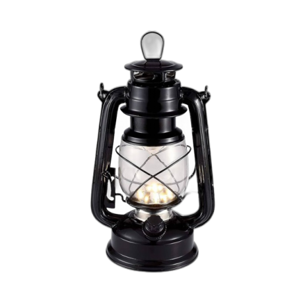
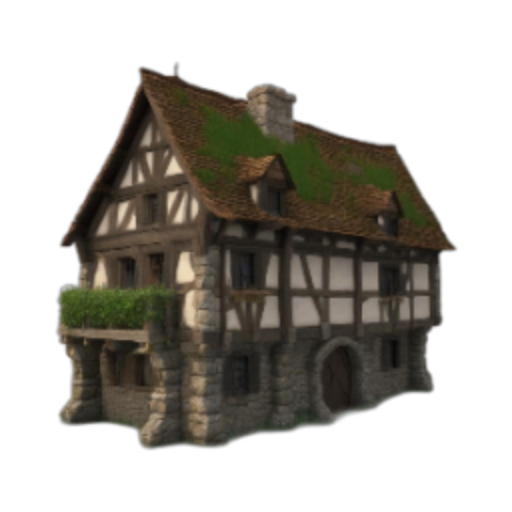
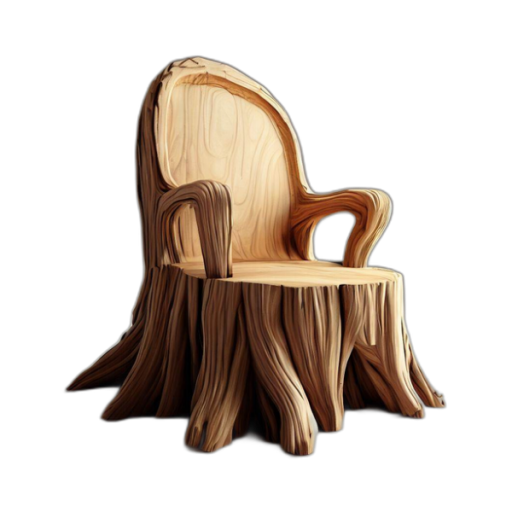
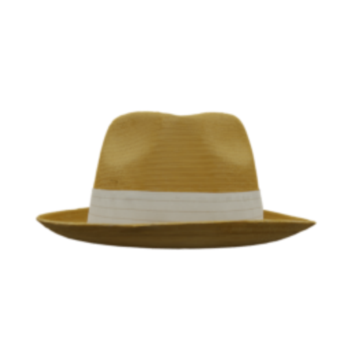
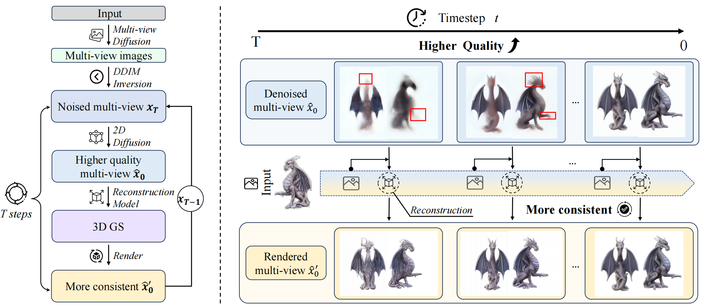
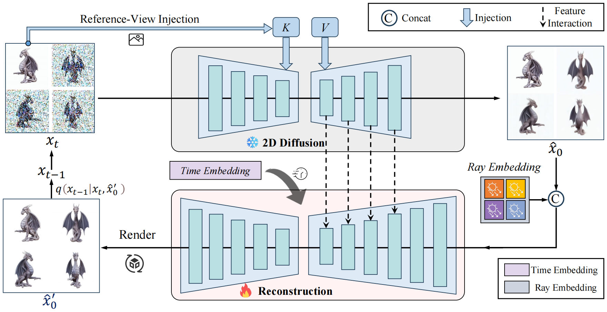

More results





*Equal contributions
1Peking University
2Pengcheng Laboratory
3National University of Singapore
Recent 3D large reconstruction models typically employ a two-stage process: first generate multi-view images by a multi-view diffusion model, and then utilize a feed-forward model to reconstruct images to 3D content. However, multi-view diffusion models often produce low-quality and inconsistent images, adversely affecting the quality of the final 3D reconstruction. To address this issue, we propose a unified 3D generation framework called Cycle3D, which cyclically utilizes a 2D diffusion-based generation module and a feed-forward 3D reconstruction module during the multi-step diffusion process. During the denoising process, the 2D diffusion model can also control the generation of unseen views and inject reference-view information, thereby enhancing the diversity and texture consistency of 3D generation. Extensive experiments demonstrate the superior ability of our method to create 3D content with high-quality and consistency compared with state-of-the-art baseline methods.
During the multi-step denoising process of Cycle3D, the input view remains clean, the pre-trained 2D generation model gradually produces multi-view images with higher quality, while the reconstruction model continuously corrects their 3D inconsistencies. The red boxes highlight inconsistencies between the multi-view images, which are then corrected by reconstruction model.

We propose a unified image-to-3D Diffusion framework that cyclically utilizes pre-trained 2D Diffusion model and 3D reconstruction model. During denoising, 2D Diffusion model can inject reference-view features, and the reconstruction model incorporates time embeddings to adapt to \(\hat{x}_0 \) at different timesteps. Additionally, the interaction between features of reconstruction model's encoder and 2D Diffusion model's decoder enhances robustness of reconstruction. During inference, we use the multi-view images \( \hat{x}'_0 \) rendered by reconstruction model and the previous step \(x_t\) , resampling to obtain \(x_{t-1}\), while keeping the input view clean.

Cycle3D achieves high-quality and consistent 3D generation from a single unposed image.
@misc{zhang2023repaint123,
title={Repaint123: Fast and High-quality One Image to 3D Generation with Progressive Controllable 2D Repainting},
author={Junwu Zhang and Zhenyu Tang and Yatian Pang and Xinhua Cheng and Peng Jin and Yida Wei and Wangbo Yu and Munan Ning and Li Yuan},
year={2023},
eprint={2312.13271},
archivePrefix={arXiv},
primaryClass={cs.CV}
}